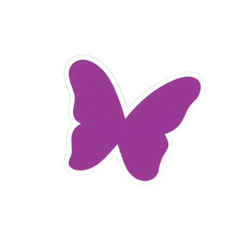
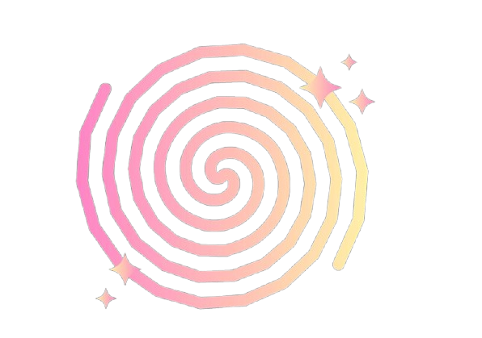
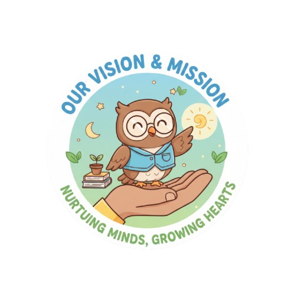

We follow a play-based,child-centric approach aligned with the National Education Policy (NEP) 2020 and the National Curriculum Framework for the Foundational Stage (NCF-FS). Our programs include Early Childhood Care and Education (ECCE) programs for children aged 1.5–3 years and a Foundational Stage – Kindergarten (Balvatika) program for children aged 3–5 years, designed to nurture holistic development through joyful, meaningful experiences.


Our Core BeliefsEvery child is capable, curious, and creative
Learning happens best through play and exploration
Teachers are facilitators and co-learners
Parents and community are partners in education

To provide a safe, joyful, and inclusive learning environment where young children grow as confident, curious, and compassionate individuals through play, exploration, and meaningful experiences.